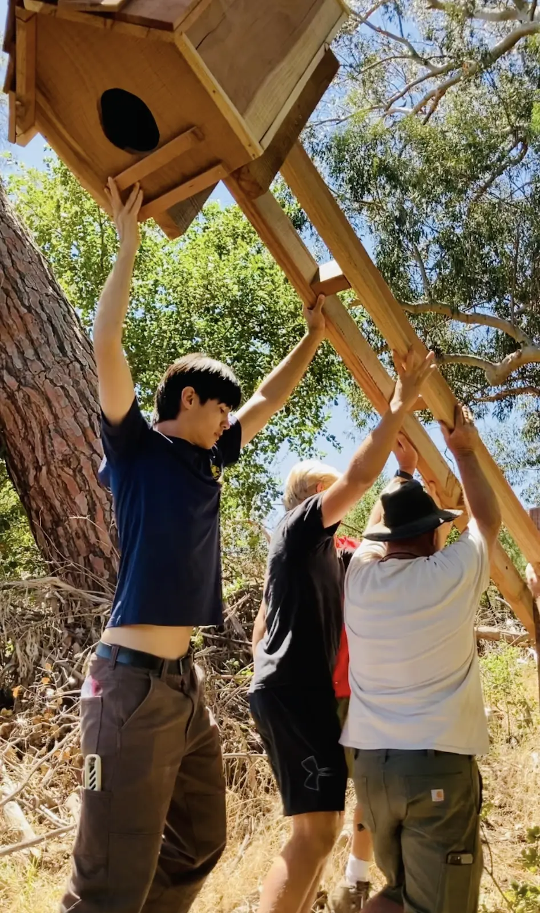
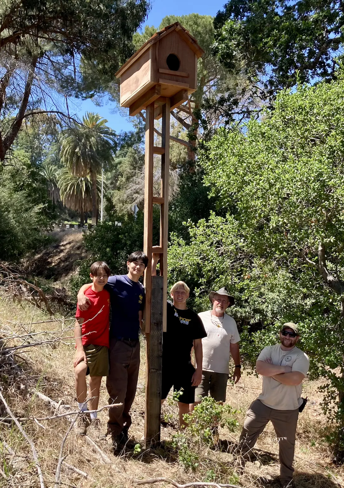

🎥 Future Livestream from Livermore CA
We have built and installed an owl box in Livermore, CA at the Livermore Area Recreation and Parks Department Ranger Station. We are currently working to bring it online to begin tracking its metrics.

